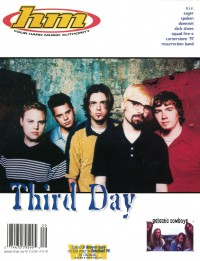

CMnexus
: Contemporary Christian culture, music, and media.
|
|
HM, Sep / Oct 1997, #67
| Cover |
|---|
|  | | Writers in this Issue |
|---|
Beeman, Bob
Crabb II, Kemper B.
MacIntosh, Dan
McCabe, Ginny
McGovern, Brian Vincent
Philpott, Kim
Scheetz, Jeff
Shirey, Eric
Van Pelt, Doug
Weeks, Lynn
|
Cover Feature:
- "New Songs and Conspiracy Theories" by Brian Vincent McGovern
Article:
- "Stripped Down For Surgery" by Dan MacIntosh
- "Doin' The Watusi" by Ginny McCabe
- "N O I N N O C E N T V I C T I M" by Eric Shirey
- "Getting 2 Know Slick Shoes" by Kim Philpott
- "Where Have All The Cowboys Gone?" by Brian Vincent McGovern
- Ghoti Hook by Lynn Weeks
- Switchfoot by Ginny McCabe
- Squad 5-0 by Brian Vincent McGovern
- Spudgun by Brian Vincent McGovern
- Shaded Red by Lynn Weeks
- "Speaking of Spoken" by Dan MacIntosh
- Identical Strangers by Brian Vincent McGovern
Hardnews:
- Steve Rowe by Doug Van Pelt
- "Beyond Acne..." by Dan MacIntosh
So & So Says....:Album Review:Concert Review:
- "Tooth & Nail Weekend" by Doug Van Pelt
- "Texas Rockfest" by Doug Van Pelt
- "Cornerstone '97" by Doug Van Pelt
Cornerstone
The Christian and Art: "The Sons of Issachar and the Task of the Christian Artist Revisited" by Kemper B. Crabb II
Pastor Bob's Column by Pastor Bob
Licks & Tricks by Jeff Scheetz
HM Back Page: "Cookie"
|
|